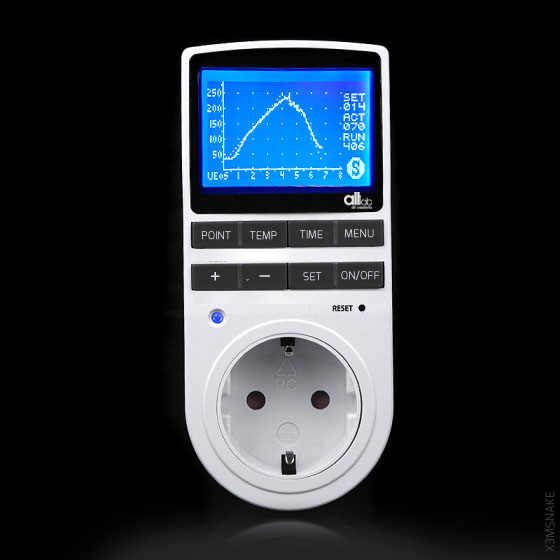

Arduino Open PID Controller interface (PID)VS.150615
The idea for this project is to build a open source easy to implement temperature controller for the AHOL initiative (altLab's Open Hardware Library).
Building as an interface, means that the hardware must be abstracted as far as we can without compromising the quality of the task it has to perform. This means that the first step is to conjure the ideal use and with that, define the lattitude in order to check if it can be with what compromises for the chosen or proposed use.
Design Guides
- Arduino Based
- Standalone (Interface Style*)
- Easy Learning (Hacker Skills Initiative)
- Ready to use
- Extendable
Prototype Concept Mockup

- | 3,0 USD | 1x MAX6675
- | 1,0 USD | 1x thermocouple K
- | 1,5 USD | 1x 5V 1-Channel H/L Level Triger Optocoupler Relay Module
- | 5,0 USD | 1x CSEDUINO
- | 0,0 USD | Bibliotecas de PID e Autotune do Brett Beauregard
| ??? USD | Prototype PCBS
CURRENT BOM TOTAL | 10,5 USD |
Project Sessions
- Bread & BreakOut Board assembly - BY.NN @15.07.21
MAX6675 Tutorials and use info
The MAX31855 is controlled through a SPI interface
I based my Arduino code off of PID Library from Github.
This library is very good with handling the PID equation, but I felt like it could use some more description and clarification in applying the equation to ordinary Arduino peripherals, which is why I’m writing this post.
in: Joe's Electronics Adventures
MAX6675 Module Pin Outs for this module are shown in the datasheets section below these pins function as follows:
SO: The module’s serial output. Your Arduino will read this output
CS: Chip Select. Setting low, selects the Module and tells it to supply an output that is synchronize with a clock
SCK : The Serial Clock… an input from your Arduino
VCC: 5V supply
GND: Ground
( – or Minus): The K thermocouple minus input.
( + or Plus): The K Thermocouple plus input.IMPORTANT NOTE– Most K thermocouples come with a red lead and a yellow lead. The red lead is normally your negative connection and the yellow lead is your positive. That is industry standard.
Arduino Libraries
Arduino Sketches and inspirationals
Datasheets
*Interface Style - When hacks done to the equipment to extend/ modify it's behaviour are independent from the original use, and when possible non destructive.